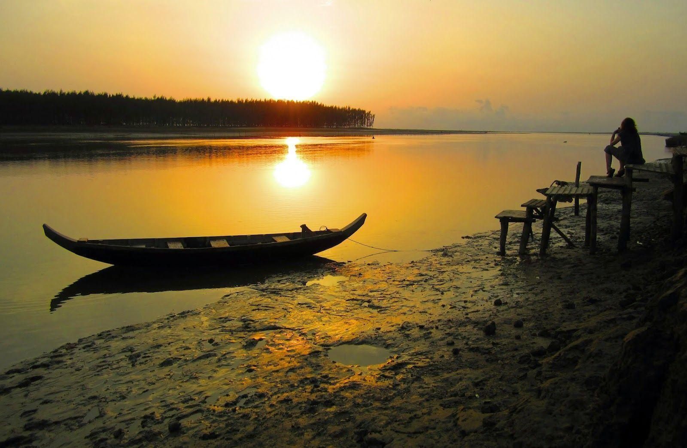

Home
Plan trip
Support
Fleet
Ready to take off ?
Lets Enjoy The Life
.jpg)
Bangladesh has a lot to offer  Barisal is a major city that lies on the bank of Kirtankhola river in south-central Bangladesh. It is the largest city and the administrative headquarter of both Barisal district and Barisal Division. The Chittagonian enthusiasm for inviting people to massive feasts is a bit of legend both locally and elsewhere in Bangladesh. Known as mezbani these feasts feature a tremendously hot curry, usually of beef. If you're not used to it, approach with caution! Cox's Bazar is a town, a fishing port and district headquarters in Bangladesh. The beach in Cox's Bazar is an unbroken 120 km sandy sea beach with a gentle slope. It is located 150 km south of the industrial port Chittagong. The capital of Bangladesh, Dhaka is the largest city in the nation. The city is known to be a colorful, congested and thriving metropolis with a population of 18 million. Jessore is a district in the southwestern region of Bangladesh. It is bordered by India to the west, Khulna District and Satkhira District to the south, Magura and Narail to the east, and Jhenaidah District to the north. Rajshahi nicknamed Silk City is a metropolitan city in Bangladesh and a major urban, commercial and educational centre of North Bengal. It is the administrative seat of Rajshahi Division & Rajshahi District. Located on the north bank of the Padma River. Sylhet is known in Bengal as the "City of Saints". It is home to the mausoleums and mosques of Shah Jalal and Shah Paran, Bengal’s most revered Sufi saints. Every year, the city receives hundreds and thousands of pilgrims to the Dargahs of Shah Jalal and Shah Paran, earning a reputation as the "spiritual capital of Bangladesh". Saidpur is a city of Nilphamari district in Rangpur Division of Bangladesh. The city becomes a very important communication hub for adjoining major district headquarters.
Bihanga is now available in every flight !!!
Here you will find -
- Our bengali culture
- Heritages around the world
- Daily products
- World Fashion
and many more......

Have you seen the world ?
Paris New York Mt.Everest The Taj